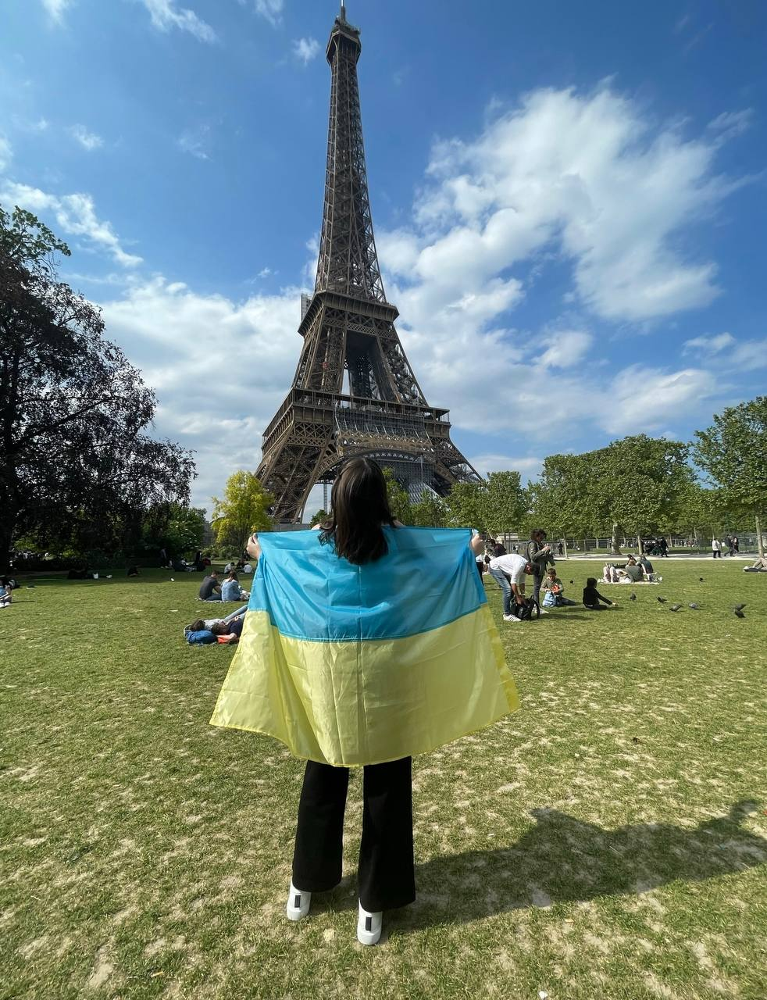

Подорожі найзахоплююча річ у світі. Перш за все, вони дозволяють нам пізнавати світ, а також побачити різні країни, дослідити їх культуру і традиції. Більш того, ми збагачуємо знання про життя в цілому, а також про нас самих зокрема. Подорожі також дають нам можливість познайомитися з новими цікавими людьми, вчити нові мови й розвивати наші здібності. Тому я намагаюся подорожувати якомога частіше. На щастя, у мене була змога поьувати у багатьох країнах світу, наприклад в Італії, Австрії, Польщі, Іспанії, Греції та багатьох інших. Проте, мабуть, найкращою була подорож до Франції. І хоча це було два роки тому, я все ще згадую цей чудовий час з величезним задоволенням. Я їздила з двома друзями та це було дійсно правильне рішення, тому що ми подорожували на автобусі й поїздка зайняла багато часу. Ми зробили тисячі фотографій Ейфелевої вежі, Лувру, Тріумфальної арки та інших пам'ятників. Ми були вражені кількістю туристів і красою місць, які ми відвідали. В останній вечір ми вирушили на невелику екскурсію на кораблі. Знаходитися на борту і побачити всі визначні пам'ятки знову було так чудово, як ніби вони прощалися з нами. Ми відмінно провели час, і я сподіваюся одного разу повернутися в Париж, щоб отримати ті ж чудові емоції.
